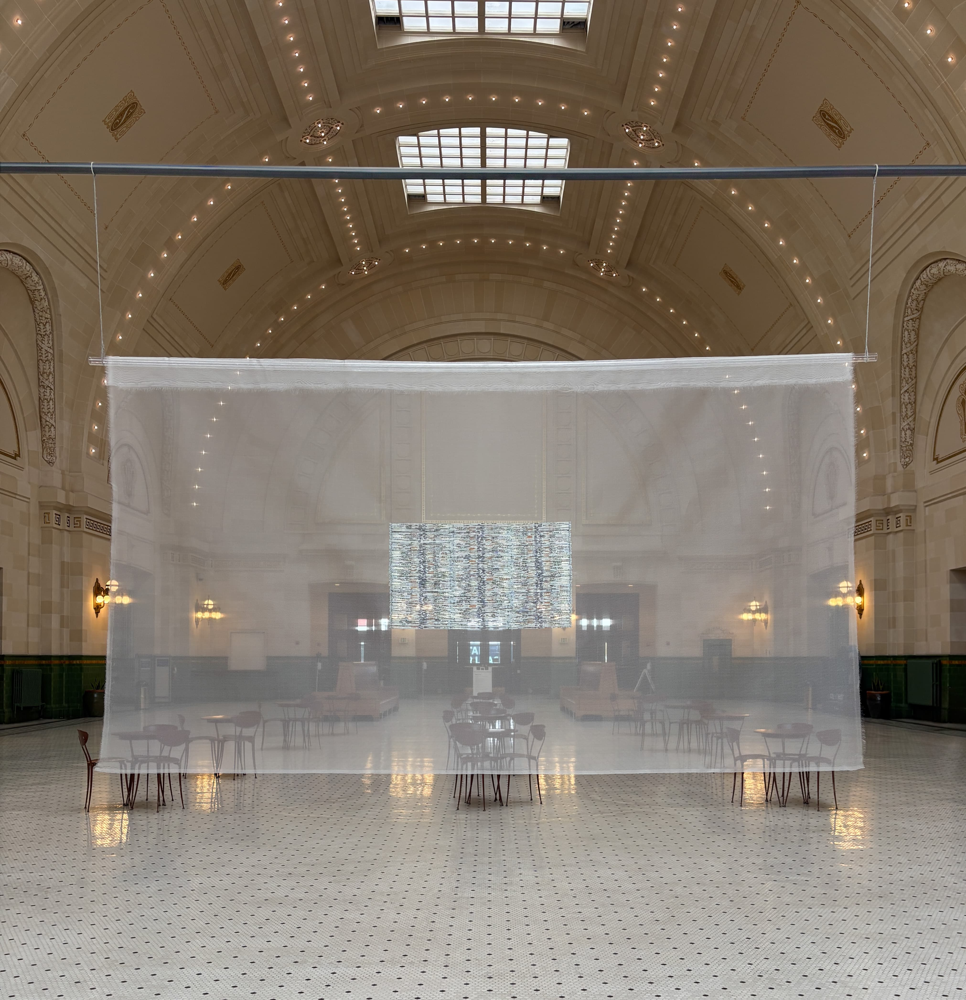
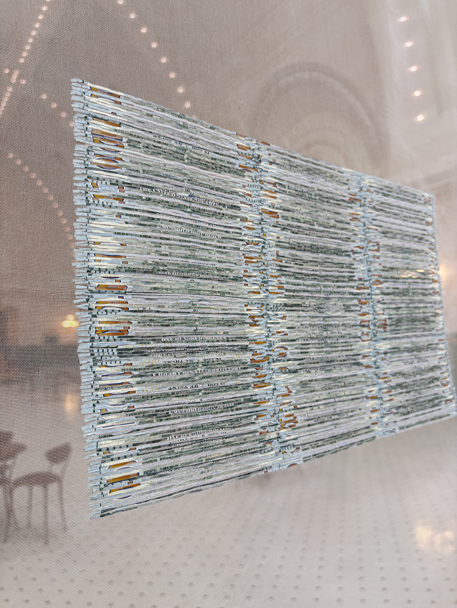
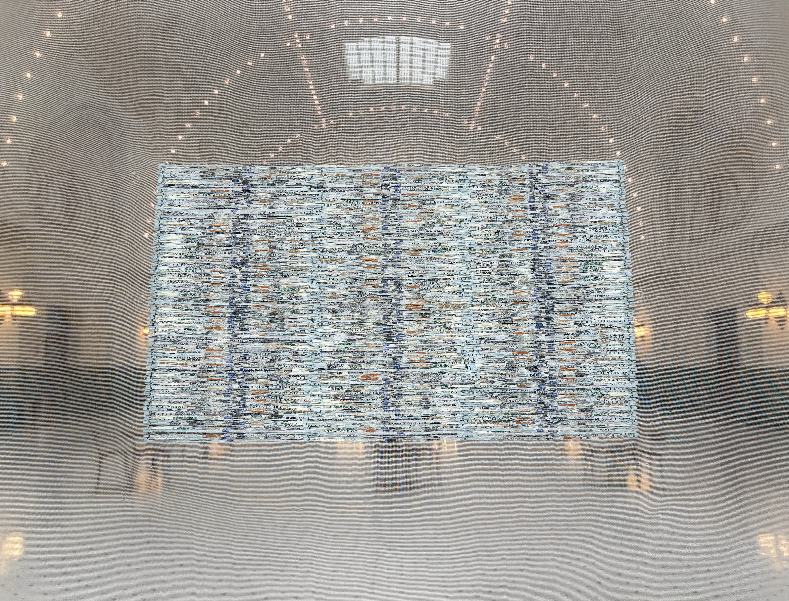

Making Money
$1,000
2026

Constructed from ten one-hundred-dollar bills shredded and reconstructed by the artist. Approximately 40 hours of labor.
- Materials
- Artist-shredded U.S. currency, silk mesh
- Dimensions
- 66 × 36 in

